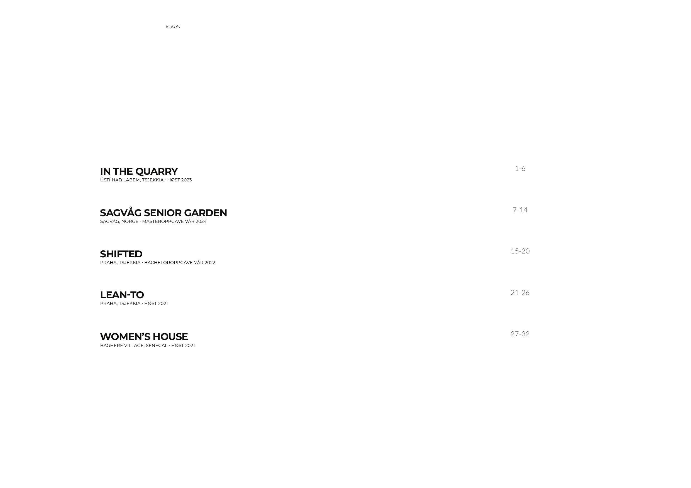
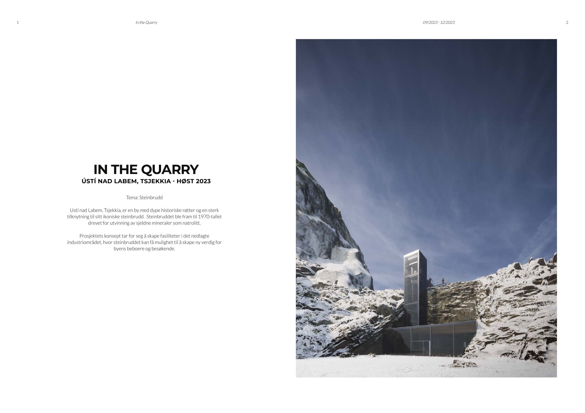
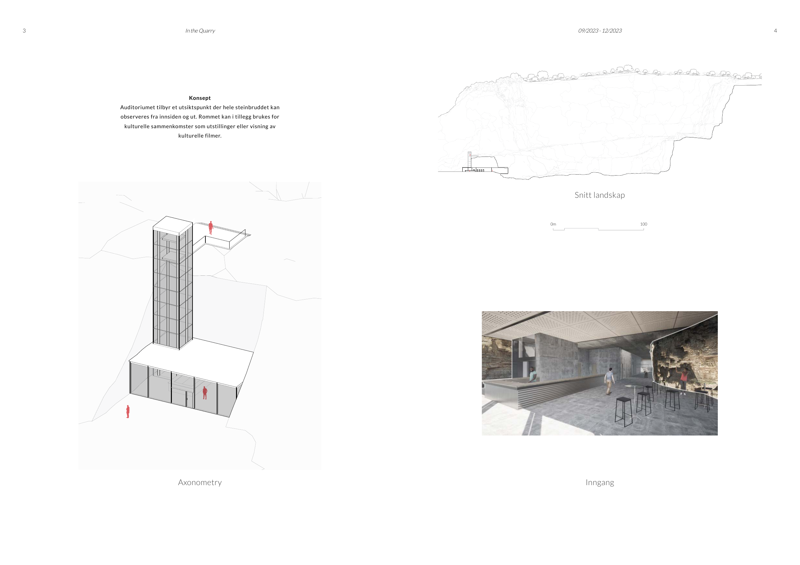
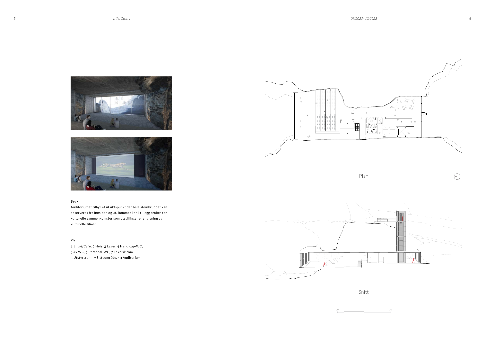
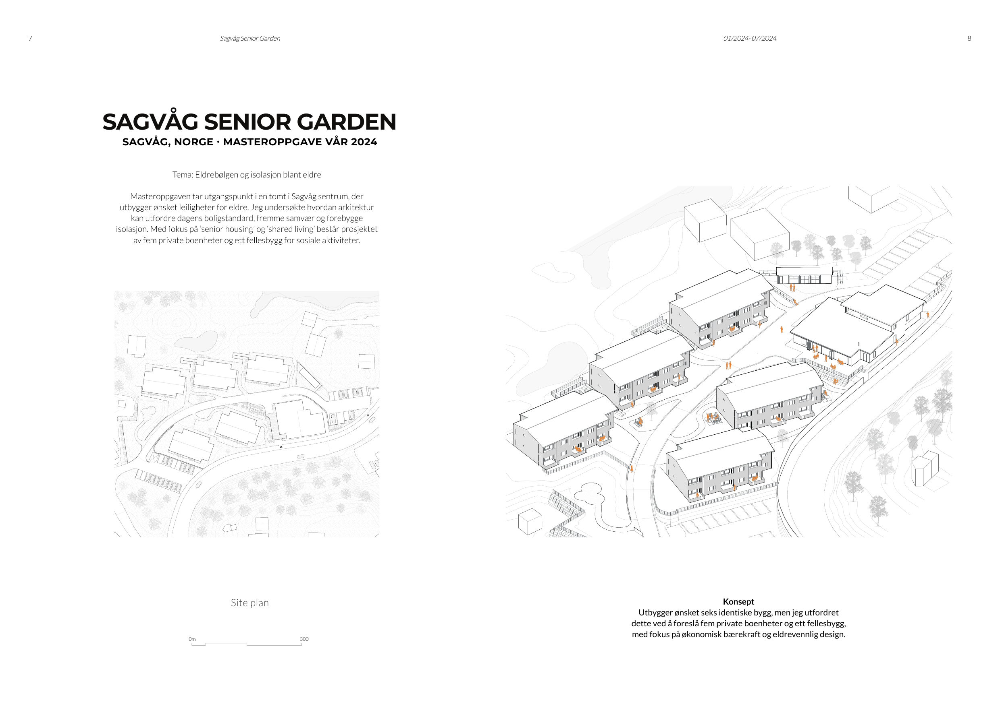

Ústí nad Labem is a city with deep historical roots and a strong connection to its iconic quarry, which was operated until the 1970s for the extraction of rare minerals including natrolite. The project creates new public facilities within this abandoned industrial site — giving the quarry an opportunity to generate new value for the city's residents and visitors.



The auditorium offers a vantage point from which the entire quarry can be observed from the inside out. The space can also be used for cultural gatherings such as exhibitions or film screenings.

